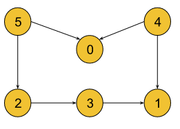
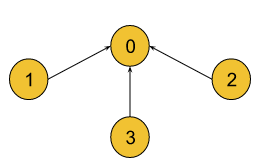
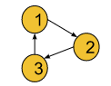
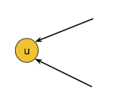
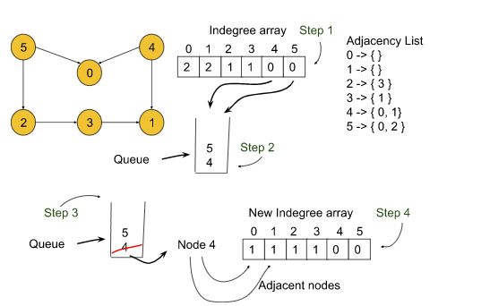

Problem Statement: Given a Directed Acyclic Graph (DAG) with V vertices and E edges, Find any Topological Sorting of that Graph.
Note:In topological sorting, node u will always appear before node v if there is a directed edge from node u towards node v(u -> v).
Example 1:
Input Format: V = 6, E = 6
Result: 5, 4, 0, 2, 3, 1
Explanation: A graph may have multiple topological sortings.
The result is one of them. The necessary conditions for the ordering are:
According to edge 5 -> 0, node 5 must appear before node 0 in the ordering.
According to edge 4 -> 0, node 4 must appear before node 0 in the ordering.
According to edge 5 -> 2, node 5 must appear before node 2 in the ordering.
According to edge 2 -> 3, node 2 must appear before node 3 in the ordering.
According to edge 3 -> 1, node 3 must appear before node 1 in the ordering.
According to edge 4 -> 1, node 4 must appear before node 1 in the ordering.
The above result satisfies all the necessary conditions.
[4, 5, 2, 3, 1, 0] and [4, 5, 0, 2, 3, 1] are also such
topological sortings that satisfy all the conditions.
Example 2:
Input Format: V = 4, E = 3
Result: 1, 2, 3, 0
Explanation: The necessary conditions for the ordering are:
For edge 1 -> 0 node 1 must appear before node 0.
For edge 2 -> 0 node 1 must appear before node 0.
For edge 3 -> 0 node 1 must appear before node 0.
[2, 3, 1, 0] is also another topological sorting for the graph.
Solution
Disclaimer: Don't jump directly to the solution, try it out yourself first.
Topological sorting only exists in Directed Acyclic Graph (DAG). If the nodes of a graph are connected through directed edges and the graph does not contain a cycle, it is called a directed acyclic graph(DAG).
The topological sorting of a directed acyclic graph is nothing but the linear ordering of vertices such that if there is an edge between node u and v(u -> v), node u appears before v in that ordering.
Now, let's understand Why topological sort only exists in DAG:
Case 1 (If the edges are undirected): If there is an undirected edge between node u and v, it signifies that there is an edge from node u to v(u -> v) as well as there is an edge from node v to u(v -> u). But according to the definition of topological sorting, it is practically impossible to write such ordering where u appears before v and v appears before u simultaneously. So, it is only possible for directed edges.
Case 2(If the directed graph contains a cycle): The following directed graph contains a cycle:

If we try to get topological sorting of this cyclic graph, for edge 1->2, node 1 must appear before 2, for edge 2->3, node 2 must appear before 3, and for edge 3->1, node 3 must appear before 1 in the linear ordering. But such ordering is not possible as there exists a cyclic dependency in the graph. Thereby, topological sorting is only possible for a directed acyclic graph.
Therefore, the intuition is to find the ordering in which the nodes are connected in a directed acyclic graph. For this, we will use a slightly modified version of BFS where we will be requiring a queue data structure(First In First Out data structure) and an array that will store the indegree of each node. The indegree of a node is the number of directed edges incoming towards it.

For example, the indegree of node u is 2, as there are 2 incoming edges towards node u.
Approach:
Previously, we solved this question using the DFS traversal technique. But in this article, we will apply the BFS(Breadth First Search) traversal technique. Breadth First Search or BFS is a traversal technique where we visit the nodes level-wise, i.e., it visits the same level nodes simultaneously, and then moves to the next level.
Initial Configuration:
Indegree Array: Initially all elements are set to 0. Then, We will count the incoming edges for a node and store it in this array. For example, if indegree of node 3 is 2, indegree[3] = 2.
Queue: As we will use BFS, a queue is required. Initially, the node with indegree 0 will be pushed into the queue.
Answer array: Initially empty and is used to store the linear ordering.
The algorithm steps are as follows:
First, we will calculate the indegree of each node and store it in the indegree array. We can iterate through the given adj list, and simply for every node u->v, we can increase the indegree of v by 1 in the indegree array.
Initially, there will be always at least a single node whose indegree is 0. So, we will push the node(s) with indegree 0 into the queue.
Then, we will pop a node from the queue including the node in our answer array, and for all its adjacent nodes, we will decrease the indegree of that node by one. For example, if node u that has been popped out from the queue has an edge towards node v(u->v), we will decrease indegree[v] by 1.
After that, if for any node the indegree becomes 0, we will push that node again into the queue.
We will repeat steps 3 and 4 until the queue is completely empty. Finally, completing the BFS we will get the linear ordering of the nodes in the answer array.
Let’s understand how to find the indegree(s):
By visiting the adjacency list, we can find out the indegrees for each node. For example, if node 3 is an adjacent node of node 2, we will just increase indegree[3] by 1 as the adjacency list suggests that node 3 has an incoming edge from node 2.
Note: If you wish to see the dry run of the above approach, you can watch the video attached to this article.
Let’s quickly understand the algorithm using the below graph:

First, we will calculate the indegrees for all 6 nodes. For node 0, it will be 2, for node 1, it will also be 2 and similarly, we will calculate for other nodes. The indegree array will look like this: {2, 2, 1, 1, 0, 0}.
Next, the queue will be pushed with nodes 4 and 5 as their indegrees are 0. Then we will start the BFS.
First, node 4 will be popped out and kept in the answer array, and for all its adjacent nodes 0 and 1, the indegrees will be decreased by 1(indegree array: {1, 1, 1, 1, 0, 0} ). No nodes will be pushed into the queue, as there are no other nodes with indegree 0.
Now, similarly, node 5 will be popped out and indegree[0] and indegree[2] will decrease by 1 keeping node 5 in the answer array. Now, we will push nodes 0 and 2 into the queue as their indegree has become 0(indegree array: {0, 1, 0, 1, 0, 0}).
Then node 0 will be popped out and as node 0 has no adjacent nodes it will be simply kept in the answer array.
Next, node 2 will be popped out and kept in the answer array while decreasing indegree[3] by 1(indegree array: {0, 1, 0, 0, 0, 0}). Now indegree[3] is 0 and so node 3 is pushed into the queue.
Next, node 3 is popped out and kept in the answer array and indegree[1] is decreased by 1 as node 1 is the adjacent node of node 3(indegree array: {0, 0, 0, 0, 0, 0}). Now indegree[1] is 0 and so node 1 is pushed into the queue.
Lastly, node 1 will be popped out and kept in the answer array, as node 1 has no adjacent nodes. Now, the BFS is completed for the graph.
Finally, the answer array will look like: {4, 5, 0, 2, 3, 1}.
Note: Points to remember when a node is popped out, indegrees for all its adjacent nodes are decreased by one and if any of them becomes 0, we push that node into the queue. Meanwhile, we include the current node in the answer immediately after it is popped out of the queue.
Code:
#include <bits/stdc++.h>
using namespace std;
class Solution {
public:
//Function to return list containing vertices in Topological order.
vector<int> topoSort(int V, vector<int> adj[])
{
int indegree[V] = {0};
for (int i = 0; i < V; i++) {
for (auto it : adj[i]) {
indegree[it]++;
}
}
queue<int> q;
for (int i = 0; i < V; i++) {
if (indegree[i] == 0) {
q.push(i);
}
}
vector<int> topo;
while (!q.empty()) {
int node = q.front();
q.pop();
topo.push_back(node);
// node is in your topo sort
// so please remove it from the indegree
for (auto it : adj[node]) {
indegree[it]--;
if (indegree[it] == 0) q.push(it);
}
}
return topo;
}
};
int main() {
//V = 6;
vector<int> adj[6] = {{}, {}, {3}, {1}, {0, 1}, {0, 2}};
int V = 6;
Solution obj;
vector<int> ans = obj.topoSort(V, adj);
for (auto node : ans) {
cout << node << " ";
}
cout << endl;
return 0;
}
Output: 4 5 0 2 3 1
Time Complexity: O(V+E), where V = no. of nodes and E = no. of edges. This is a simple BFS algorithm.
Space Complexity: O(N) + O(N) ~ O(2N), O(N) for the indegree array, and O(N) for the queue data structure used in BFS(where N = no.of nodes).
import java.util.*;
class Solution {
// Function to return list containing vertices in Topological order.
static int[] topoSort(int V, ArrayList<ArrayList<Integer>> adj) {
int indegree[] = new int[V];
for (int i = 0; i < V; i++) {
for (int it : adj.get(i)) {
indegree[it]++;
}
}
Queue<Integer> q = new LinkedList<Integer>();
;
for (int i = 0; i < V; i++) {
if (indegree[i] == 0) {
q.add(i);
}
}
int topo[] = new int[V];
int i = 0;
while (!q.isEmpty()) {
int node = q.peek();
q.remove();
topo[i++] = node;
// node is in your topo sort
// so please remove it from the indegree
for (int it : adj.get(node)) {
indegree[it]--;
if (indegree[it] == 0) {
q.add(it);
}
}
}
return topo;
}
}
public class tUf {
public static void main(String[] args) {
int V = 6;
ArrayList<ArrayList<Integer>> adj = new ArrayList<>();
for (int i = 0; i < V; i++) {
adj.add(new ArrayList<>());
}
adj.get(2).add(3);
adj.get(3).add(1);
adj.get(4).add(0);
adj.get(4).add(1);
adj.get(5).add(0);
adj.get(5).add(2);
int[] ans = Solution.topoSort(V, adj);
for (int node : ans) {
System.out.print(node + " ");
}
System.out.println("");
}
}
Output: 4 5 0 2 3 1
Time Complexity: O(V+E), where V = no. of nodes and E = no. of edges. This is a simple BFS algorithm.
Space Complexity: O(N) + O(N) ~ O(2N), O(N) for the indegree array, and O(N) for the queue data structure used in BFS(where N = no.of nodes).
Special thanks to KRITIDIPTA GHOSH for contributing to this article on takeUforward. If you also wish to share your knowledge with the takeUforward fam, please check out this article. If you want to suggest any improvement/correction in this article please mail us at write4tuf@gmail.com